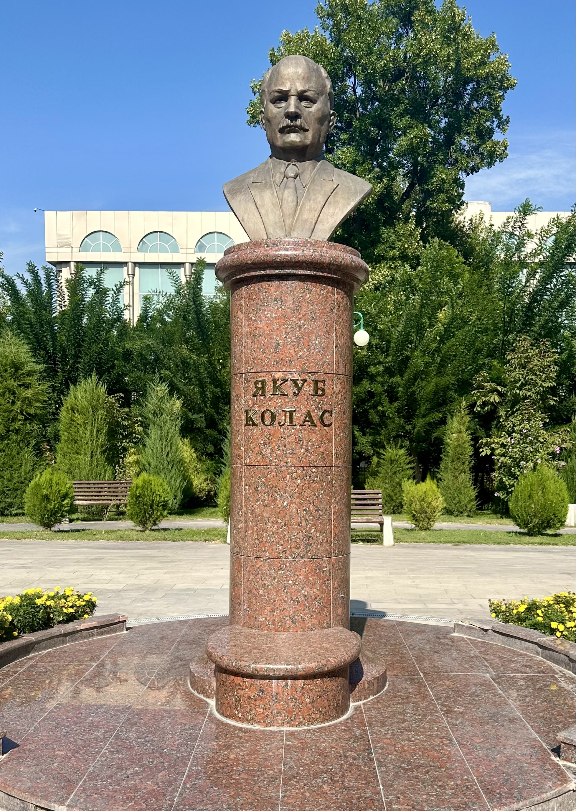
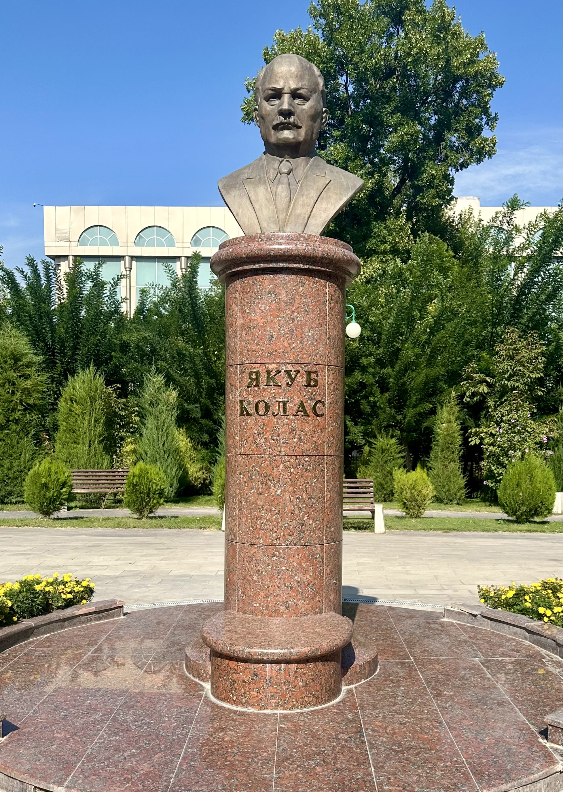

Якуб Колас — литературный псевдоним Константина Михайловича Мицкеевича, родившегося 3 ноября 1882 года в селе Окинчицах near деревни Николаевщина в Минском уезде. Его семья происходила из лесничих, и детство прошло в живописных местах Беларуси: у реки Нёман, в деревне Николаевщина, на урочище Тёмные ляды и в хуторах Окинчицы, Смольня, Альбуть, окружённых лугами и рощами. Эти природные пейзажи оставили глубокий отпечаток в сердце будущего поэта, сформировав его особый мироощущение — так называемый «родны кут». Образование Константин получил в Николаевщинском народном училище, затем в 1898 году поступил и в 1902 году закончил Несвижскую учительскую семинарию, где впервые познакомился с произведениями земляка-фольклориста П. П. Демидовича, что вызвало у него интерес к сбору народного творчества. После окончания семинарии он работал учителем на Полесье, в деревнях Люсино и Пинковичи. Там он столкнулся с тяжелой жизнью крестьян и недостатками системы образования, что побудило его участвовать в учительском съезде 1906 года в Николаевщине. Этот съезд был разгромлен полицией, и Мицкевич был осужден на три года за участие — он отбывал наказание в Минской тюрьме с 1908 по 1911 год.

После освобождения он стал сотрудником газеты «Наша доля», где опубликовал своё первое стихотворение «Наш родной край» под псевдонимом Якуб Колас, что считается началом его профессиональной литературной деятельности. В 1915 году был мобилизован в армию, окончил Александровское военное училище в Москве (1916), служил в Перми, а летом 1917-го — на фронте, но по состоянию здоровья демобилизовался. Далее он работал инспектором народных училищ в России. В 1921 году вернулся в Минск и приступил к работе в Институте белорусской культуры, активно участвуя в его деятельности, а также преподавая в педагогическом техникуме и в БГУ. В 1926 году ему присвоили звание Народного поэта Беларуси, а в 1928 — он стал академиком АН БССР, а затем — вице-президентом.
 

Во время Великой Отечественной войны поэт находился в эвакуации, жил в Ташкенте, Москве и Клязьме, а в 1944 году вернулся в Минск. За его военные стихи и поэму «Рыбакова хата» он был удостоен двух Государственных премий СССР. С 1934 года — член Союза писателей СССР, награжден орденами Ленина, Красного Знамени, Трудового Красного Знамени и медалями. Якуб Колас скончался 13 августа 1956 года и похоронен на Военном кладбище Минска. В 1959–1965 годах была учреждена литературная премия имени Я. Коласа. Его имя носит государственная премия за литературу и научные работы, учрежденная с 1972 года, а институты и учреждения Беларуси названы в его честь, установлены памятники и мемориальные доски. Среди них — площадь и памятник в Минске, мемориальные доски на его домах, а также названия школ, улиц и театров.